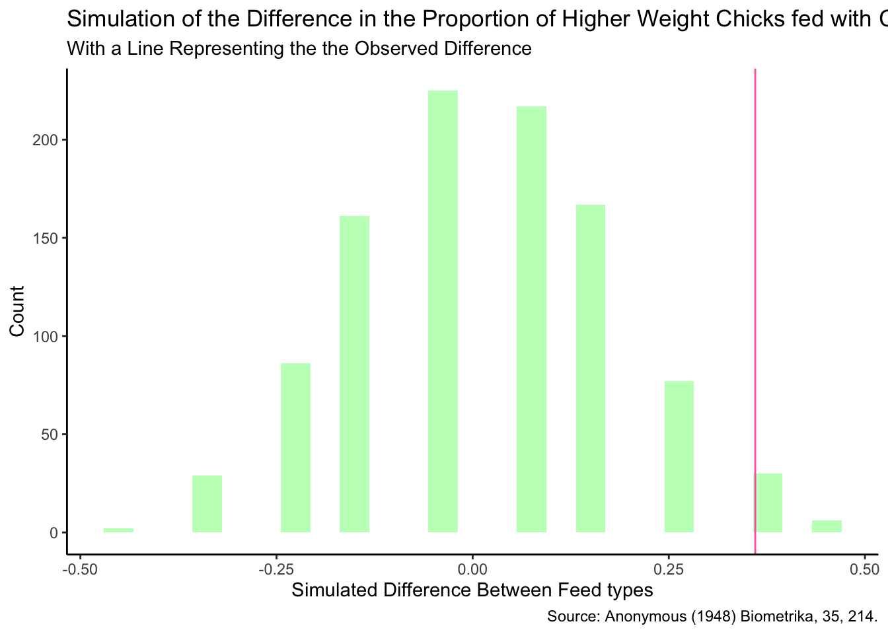

library(tidyverse)Casein is composed mostly of protein
Null hypothesis: Feeding your chicks casein will have no affect on their weight
Alternative hypothesis: Feeding your chicks casein will increase the weight of the chicks
casein <- chickwts |>
mutate(feed= fct_collapse(feed, other = c("linseed", "sunflower", "soybean", "horsebean", "meatmeal")))
casein$weight2 <- ifelse(casein$weight > 265, 'HIGH', 'LOW')
casein_final <- tibble(casein |>
select(feed, weight2) |>
mutate(weight = as.factor(weight2)) |>
select(-weight2))
casein_final # A tibble: 71 × 2
feed weight
<fct> <fct>
1 other LOW
2 other LOW
3 other LOW
4 other LOW
5 other LOW
6 other LOW
7 other LOW
8 other LOW
9 other LOW
10 other LOW
# ℹ 61 more rowssample(casein_final$feed) [1] other other other casein other other other other other other
[11] other other other other other other other other other other
[21] other other other other other other other other other other
[31] casein casein other other other other other other other other
[41] other other other casein other other other casein other other
[51] other other casein other other other casein other other casein
[61] other casein other other other other casein casein other other
[71] casein
Levels: casein otherFirst I wrote a code to calculate the observed difference between the proportion of higher weight chicks to total chicks for the control (other) and treatment (casien) groups.
casein_summary <- casein_final |>
group_by(feed) |>
summarise(prop_high = mean (weight=="HIGH"))
observed_diff_cas <- casein_summary [[2]][1] -casein_summary[[2]][2]
casein_summary# A tibble: 2 × 2
feed prop_high
<fct> <dbl>
1 casein 0.75
2 other 0.390observed_diff_cas[1] 0.3601695Next, we will create a null world that shuffles the feed or treatment among the chicks. We can calculate this simulated difference if there was no dependence on feed.
simulated_diff_cas <- vector("double", 1000)
for(i in 1:1000) {
casein_summary1 <- casein_final |>
mutate(shuffled_treatment = sample(feed)) |>
group_by(shuffled_treatment) |>
summarize(prop_yes = mean (weight=="HIGH"))
simulated_diff_cas[[i]] <- casein_summary1[[2]][1]-casein_summary1[[2]][2]
}
simulated_diff_cas [1] 0.05932203 -0.14124294 -0.24152542 0.05932203 -0.14124294 0.05932203
[7] -0.04096045 -0.24152542 0.15960452 0.25988701 0.25988701 0.15960452
[13] -0.24152542 -0.04096045 -0.14124294 -0.04096045 0.05932203 -0.04096045
[19] -0.14124294 -0.04096045 -0.04096045 0.15960452 0.15960452 0.25988701
[25] -0.14124294 -0.14124294 0.05932203 0.05932203 0.05932203 0.15960452
[31] 0.15960452 0.15960452 -0.14124294 0.05932203 0.15960452 -0.04096045
[37] 0.25988701 -0.04096045 0.05932203 -0.04096045 0.05932203 0.15960452
[43] -0.04096045 -0.14124294 -0.04096045 -0.24152542 0.05932203 0.05932203
[49] 0.36016949 -0.04096045 0.05932203 0.05932203 -0.14124294 -0.24152542
[55] 0.15960452 0.15960452 -0.24152542 0.05932203 0.05932203 -0.14124294
[61] 0.05932203 -0.14124294 0.05932203 0.05932203 0.25988701 -0.04096045
[67] 0.15960452 0.36016949 0.05932203 0.05932203 -0.24152542 -0.04096045
[73] -0.24152542 0.25988701 0.15960452 0.25988701 0.05932203 -0.04096045
[79] -0.04096045 -0.14124294 -0.04096045 0.05932203 -0.04096045 -0.04096045
[85] 0.36016949 0.36016949 0.15960452 0.05932203 0.05932203 0.15960452
[91] -0.04096045 -0.04096045 0.05932203 -0.24152542 0.15960452 -0.24152542
[97] -0.04096045 -0.04096045 0.15960452 -0.04096045 0.15960452 0.05932203
[103] 0.15960452 0.15960452 0.05932203 0.36016949 -0.24152542 0.05932203
[109] 0.15960452 0.05932203 -0.34180791 0.05932203 0.05932203 -0.04096045
[115] -0.14124294 -0.14124294 0.05932203 0.46045198 0.05932203 0.05932203
[121] 0.15960452 0.25988701 0.05932203 -0.14124294 -0.14124294 -0.14124294
[127] -0.34180791 -0.14124294 0.05932203 -0.04096045 0.05932203 0.05932203
[133] 0.25988701 -0.04096045 0.05932203 0.05932203 0.15960452 0.36016949
[139] -0.14124294 0.05932203 0.25988701 -0.04096045 0.05932203 -0.24152542
[145] 0.15960452 0.05932203 0.05932203 0.05932203 0.05932203 0.25988701
[151] -0.04096045 0.25988701 0.15960452 -0.04096045 0.15960452 -0.04096045
[157] 0.05932203 -0.14124294 0.15960452 -0.14124294 0.36016949 -0.04096045
[163] -0.24152542 -0.34180791 -0.24152542 0.15960452 -0.04096045 0.05932203
[169] -0.14124294 0.05932203 0.05932203 0.15960452 0.25988701 0.05932203
[175] -0.04096045 0.05932203 0.25988701 -0.14124294 -0.04096045 -0.14124294
[181] -0.24152542 -0.04096045 0.15960452 0.05932203 -0.04096045 -0.04096045
[187] 0.46045198 -0.34180791 0.15960452 -0.04096045 -0.04096045 -0.14124294
[193] 0.05932203 0.05932203 0.15960452 -0.34180791 -0.24152542 -0.14124294
[199] -0.14124294 0.05932203 -0.04096045 0.05932203 -0.04096045 -0.14124294
[205] 0.05932203 -0.04096045 0.15960452 -0.24152542 0.05932203 -0.34180791
[211] -0.04096045 0.05932203 0.15960452 -0.14124294 -0.04096045 0.05932203
[217] 0.05932203 0.05932203 -0.04096045 -0.04096045 0.05932203 -0.04096045
[223] -0.14124294 -0.14124294 -0.24152542 0.15960452 0.05932203 -0.14124294
[229] 0.15960452 0.25988701 -0.14124294 -0.04096045 0.46045198 -0.14124294
[235] -0.34180791 0.05932203 -0.14124294 -0.24152542 -0.14124294 0.15960452
[241] 0.15960452 -0.24152542 -0.04096045 -0.04096045 0.25988701 -0.24152542
[247] -0.04096045 -0.24152542 0.15960452 0.15960452 -0.14124294 0.05932203
[253] -0.24152542 0.15960452 -0.04096045 0.15960452 0.25988701 -0.24152542
[259] 0.25988701 0.05932203 -0.04096045 0.15960452 0.15960452 0.05932203
[265] 0.05932203 -0.04096045 -0.04096045 0.15960452 0.15960452 -0.14124294
[271] -0.04096045 -0.14124294 0.15960452 -0.24152542 0.15960452 -0.04096045
[277] 0.05932203 -0.04096045 0.46045198 0.15960452 -0.04096045 -0.04096045
[283] -0.04096045 -0.14124294 -0.34180791 0.15960452 0.05932203 -0.04096045
[289] 0.05932203 0.25988701 0.15960452 -0.14124294 -0.04096045 -0.04096045
[295] -0.04096045 0.05932203 -0.14124294 0.25988701 -0.04096045 -0.14124294
[301] 0.15960452 0.15960452 0.15960452 -0.14124294 -0.14124294 0.05932203
[307] -0.14124294 0.25988701 -0.24152542 0.25988701 -0.04096045 -0.14124294
[313] 0.15960452 -0.14124294 -0.24152542 0.25988701 -0.24152542 -0.34180791
[319] 0.15960452 0.05932203 0.25988701 -0.04096045 0.05932203 -0.04096045
[325] -0.14124294 0.05932203 -0.24152542 0.05932203 0.05932203 0.05932203
[331] 0.05932203 0.25988701 0.15960452 0.25988701 0.15960452 -0.04096045
[337] 0.05932203 0.05932203 0.15960452 0.15960452 0.25988701 0.15960452
[343] 0.15960452 -0.14124294 -0.44209040 0.25988701 -0.04096045 -0.04096045
[349] 0.05932203 0.15960452 -0.14124294 -0.24152542 0.15960452 0.05932203
[355] -0.34180791 -0.04096045 -0.04096045 -0.14124294 0.05932203 -0.14124294
[361] -0.14124294 0.05932203 -0.04096045 -0.14124294 -0.04096045 -0.14124294
[367] -0.24152542 -0.14124294 0.25988701 0.05932203 0.05932203 -0.24152542
[373] 0.25988701 -0.04096045 -0.14124294 -0.24152542 0.15960452 -0.04096045
[379] 0.05932203 -0.04096045 -0.14124294 -0.04096045 -0.14124294 0.25988701
[385] -0.04096045 0.15960452 0.15960452 -0.14124294 -0.04096045 0.05932203
[391] -0.04096045 -0.14124294 0.15960452 0.25988701 -0.34180791 -0.24152542
[397] 0.36016949 0.05932203 0.05932203 -0.14124294 0.15960452 0.05932203
[403] 0.25988701 0.05932203 -0.24152542 0.15960452 0.15960452 -0.04096045
[409] 0.05932203 -0.14124294 0.25988701 0.25988701 0.05932203 0.05932203
[415] 0.05932203 -0.14124294 -0.14124294 -0.34180791 -0.04096045 -0.24152542
[421] 0.25988701 -0.04096045 -0.04096045 -0.04096045 0.25988701 0.15960452
[427] 0.05932203 0.15960452 -0.04096045 0.15960452 0.05932203 -0.14124294
[433] 0.05932203 -0.14124294 0.15960452 0.05932203 0.36016949 0.05932203
[439] 0.05932203 0.25988701 -0.14124294 0.15960452 -0.04096045 0.05932203
[445] 0.36016949 0.15960452 -0.04096045 -0.04096045 -0.04096045 -0.14124294
[451] 0.15960452 -0.04096045 0.46045198 0.05932203 0.05932203 0.05932203
[457] -0.24152542 0.36016949 0.15960452 0.05932203 -0.44209040 0.15960452
[463] 0.15960452 0.15960452 0.05932203 0.25988701 0.25988701 0.05932203
[469] 0.05932203 0.15960452 -0.14124294 0.05932203 -0.04096045 -0.04096045
[475] 0.05932203 -0.14124294 -0.04096045 -0.14124294 -0.04096045 0.15960452
[481] -0.14124294 0.15960452 0.36016949 -0.04096045 -0.24152542 0.25988701
[487] -0.14124294 0.15960452 0.05932203 -0.04096045 0.15960452 -0.04096045
[493] -0.24152542 -0.04096045 0.05932203 0.46045198 -0.24152542 0.15960452
[499] -0.04096045 -0.04096045 -0.04096045 -0.24152542 -0.14124294 0.15960452
[505] 0.15960452 -0.04096045 -0.04096045 -0.04096045 0.15960452 -0.14124294
[511] -0.14124294 -0.34180791 -0.04096045 -0.24152542 -0.04096045 0.25988701
[517] -0.14124294 -0.04096045 -0.14124294 -0.04096045 0.05932203 0.05932203
[523] 0.15960452 -0.14124294 0.05932203 -0.14124294 -0.14124294 0.15960452
[529] 0.05932203 0.05932203 -0.04096045 -0.04096045 -0.04096045 0.15960452
[535] 0.05932203 -0.24152542 -0.14124294 0.05932203 0.15960452 -0.04096045
[541] -0.04096045 -0.04096045 0.15960452 -0.04096045 -0.14124294 -0.14124294
[547] 0.05932203 -0.04096045 0.05932203 0.15960452 -0.04096045 -0.14124294
[553] -0.34180791 0.05932203 0.25988701 -0.14124294 0.05932203 0.15960452
[559] -0.34180791 -0.14124294 -0.04096045 -0.04096045 0.05932203 0.05932203
[565] 0.25988701 0.05932203 -0.04096045 -0.14124294 -0.04096045 -0.04096045
[571] 0.15960452 -0.24152542 -0.14124294 -0.34180791 0.15960452 0.36016949
[577] -0.04096045 0.15960452 0.25988701 0.05932203 0.15960452 0.05932203
[583] -0.04096045 -0.14124294 -0.14124294 -0.24152542 0.25988701 -0.14124294
[589] -0.14124294 0.25988701 0.05932203 0.36016949 -0.14124294 0.05932203
[595] 0.05932203 -0.14124294 0.05932203 -0.04096045 -0.04096045 0.05932203
[601] 0.05932203 -0.04096045 -0.24152542 -0.24152542 0.05932203 -0.24152542
[607] -0.04096045 0.05932203 0.15960452 0.05932203 0.05932203 0.15960452
[613] -0.24152542 0.15960452 0.25988701 -0.04096045 -0.04096045 -0.04096045
[619] -0.24152542 -0.04096045 -0.14124294 -0.04096045 -0.04096045 -0.14124294
[625] 0.05932203 -0.04096045 -0.04096045 0.15960452 -0.04096045 -0.24152542
[631] 0.05932203 -0.14124294 -0.04096045 -0.14124294 0.25988701 -0.04096045
[637] -0.14124294 0.15960452 0.05932203 0.25988701 -0.04096045 -0.04096045
[643] 0.05932203 -0.14124294 0.15960452 -0.04096045 -0.14124294 -0.04096045
[649] -0.04096045 0.15960452 0.05932203 -0.04096045 -0.14124294 -0.14124294
[655] -0.14124294 0.05932203 -0.14124294 0.15960452 -0.14124294 -0.04096045
[661] -0.24152542 -0.04096045 0.05932203 0.25988701 0.15960452 0.36016949
[667] 0.36016949 0.25988701 0.05932203 -0.14124294 -0.04096045 -0.14124294
[673] 0.15960452 -0.14124294 -0.14124294 0.05932203 0.15960452 -0.24152542
[679] 0.15960452 -0.14124294 0.05932203 0.36016949 0.15960452 0.15960452
[685] 0.15960452 -0.04096045 -0.24152542 -0.14124294 -0.14124294 0.05932203
[691] -0.04096045 -0.04096045 -0.24152542 -0.14124294 -0.24152542 -0.04096045
[697] -0.24152542 -0.34180791 -0.34180791 0.05932203 -0.14124294 -0.14124294
[703] -0.34180791 -0.14124294 0.25988701 0.15960452 -0.14124294 -0.34180791
[709] -0.04096045 -0.04096045 0.05932203 0.05932203 -0.04096045 0.05932203
[715] -0.04096045 0.05932203 -0.14124294 -0.24152542 0.25988701 0.05932203
[721] -0.04096045 0.05932203 -0.04096045 -0.04096045 -0.04096045 -0.14124294
[727] 0.25988701 0.05932203 0.05932203 -0.04096045 -0.14124294 -0.04096045
[733] -0.04096045 -0.24152542 0.05932203 -0.04096045 -0.34180791 0.15960452
[739] -0.24152542 0.15960452 0.25988701 0.15960452 0.05932203 0.05932203
[745] 0.15960452 -0.14124294 0.05932203 0.15960452 -0.14124294 -0.04096045
[751] 0.25988701 0.15960452 0.15960452 0.25988701 -0.24152542 0.25988701
[757] 0.36016949 -0.34180791 -0.24152542 -0.14124294 0.15960452 0.15960452
[763] -0.04096045 -0.24152542 0.05932203 0.05932203 0.05932203 -0.14124294
[769] -0.04096045 -0.04096045 -0.14124294 0.25988701 0.05932203 -0.14124294
[775] 0.25988701 0.15960452 -0.04096045 -0.04096045 0.05932203 -0.04096045
[781] -0.34180791 0.05932203 0.15960452 0.36016949 -0.04096045 -0.04096045
[787] -0.24152542 0.15960452 0.36016949 0.05932203 -0.04096045 -0.14124294
[793] 0.05932203 0.05932203 -0.34180791 -0.04096045 0.25988701 0.05932203
[799] 0.05932203 -0.34180791 0.15960452 -0.04096045 0.15960452 -0.14124294
[805] -0.34180791 -0.24152542 -0.04096045 0.05932203 -0.34180791 0.36016949
[811] 0.15960452 -0.04096045 -0.14124294 0.05932203 -0.04096045 -0.14124294
[817] -0.14124294 0.15960452 0.05932203 -0.24152542 -0.14124294 -0.04096045
[823] 0.15960452 -0.04096045 0.15960452 -0.24152542 0.05932203 -0.14124294
[829] 0.15960452 0.05932203 0.36016949 0.15960452 0.25988701 0.15960452
[835] -0.14124294 0.05932203 -0.24152542 0.36016949 -0.04096045 0.05932203
[841] 0.15960452 0.05932203 -0.04096045 0.05932203 0.05932203 0.25988701
[847] 0.36016949 -0.24152542 0.05932203 0.15960452 -0.04096045 -0.24152542
[853] 0.15960452 -0.24152542 0.15960452 0.05932203 -0.24152542 0.05932203
[859] 0.25988701 0.15960452 0.05932203 -0.14124294 0.36016949 -0.24152542
[865] -0.04096045 -0.04096045 0.15960452 -0.14124294 0.15960452 -0.24152542
[871] 0.15960452 0.36016949 -0.04096045 -0.04096045 0.25988701 0.05932203
[877] -0.14124294 0.15960452 -0.24152542 0.25988701 -0.24152542 -0.34180791
[883] -0.34180791 0.15960452 -0.14124294 -0.14124294 0.15960452 -0.24152542
[889] 0.05932203 -0.04096045 0.05932203 0.15960452 0.25988701 -0.24152542
[895] -0.04096045 0.25988701 -0.14124294 -0.24152542 0.15960452 0.25988701
[901] -0.04096045 -0.04096045 0.25988701 -0.24152542 -0.14124294 0.15960452
[907] -0.14124294 0.25988701 -0.04096045 -0.14124294 -0.04096045 0.15960452
[913] -0.04096045 -0.14124294 0.05932203 0.05932203 -0.14124294 -0.04096045
[919] 0.15960452 0.15960452 0.15960452 0.15960452 -0.04096045 0.05932203
[925] 0.15960452 0.15960452 -0.04096045 0.05932203 -0.14124294 0.36016949
[931] -0.14124294 0.15960452 0.25988701 -0.14124294 -0.14124294 -0.04096045
[937] 0.15960452 -0.24152542 0.05932203 -0.04096045 -0.24152542 -0.14124294
[943] 0.05932203 -0.24152542 -0.04096045 0.15960452 0.05932203 -0.04096045
[949] -0.14124294 -0.04096045 -0.04096045 0.05932203 -0.04096045 -0.14124294
[955] -0.04096045 -0.04096045 -0.04096045 0.05932203 0.25988701 0.05932203
[961] 0.05932203 0.05932203 0.36016949 -0.04096045 -0.14124294 -0.24152542
[967] -0.14124294 0.05932203 -0.04096045 -0.14124294 0.05932203 0.05932203
[973] 0.25988701 0.05932203 -0.04096045 0.05932203 0.25988701 -0.04096045
[979] -0.04096045 -0.04096045 0.15960452 -0.24152542 0.15960452 -0.14124294
[985] -0.04096045 -0.14124294 0.25988701 -0.04096045 0.36016949 0.15960452
[991] -0.04096045 0.36016949 -0.04096045 -0.04096045 0.05932203 0.05932203
[997] -0.04096045 0.15960452 -0.24152542 0.05932203Finally we can use these simulated differences to calculate how rare getting our observed difference would be.
null_world_cas <- tibble(simulated_diff_cas = simulated_diff_cas)
ggplot(null_world_cas, aes(x=simulated_diff_cas)) +
geom_histogram(bins= 25, fill= "darkseagreen1")+
geom_vline(xintercept= observed_diff_cas, color= "hotpink") +
theme_classic() +
labs(x= "Simulated Difference Between Feed types", y= "Count",
title= "Simulation of the Difference in the Proportion of Higher Weight Chicks fed with Casein feed and Other Types of Feed in the Null World", subtitle= "With a Line Representing the the Observed Difference", caption= "Source: Anonymous (1948) Biometrika, 35, 214.")
p_value <- sum(simulated_diff_cas>=observed_diff_cas)/1000
p_value[1] 0.036